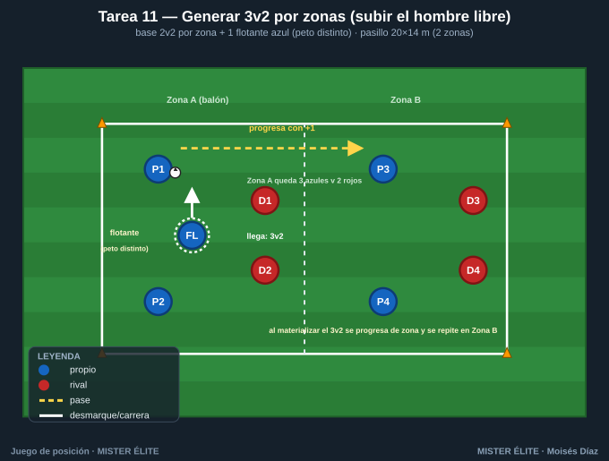
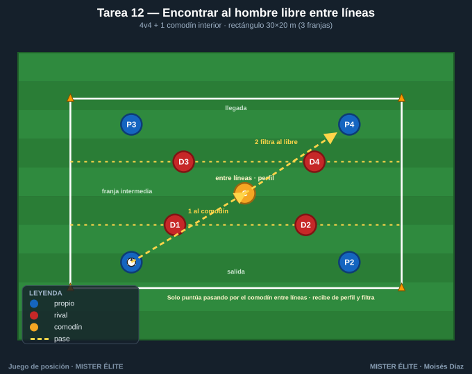
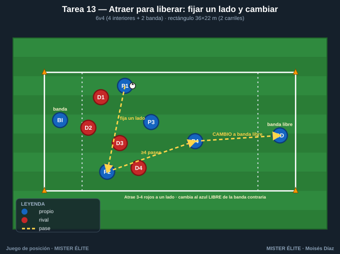
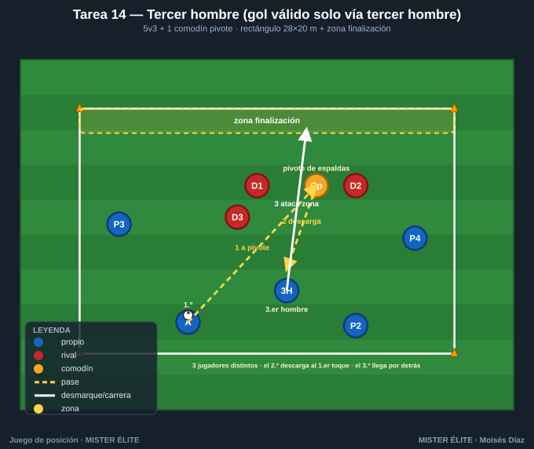
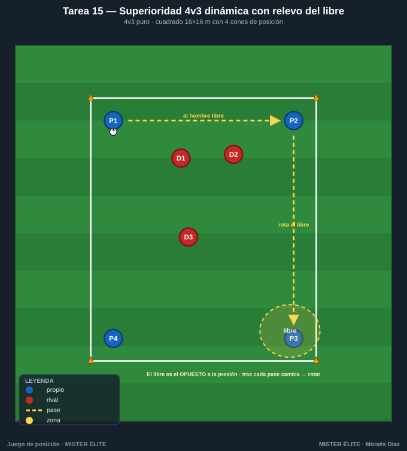

Familia 3 · Crear y usar superioridades / hombre libre (T11–15)
Notación: poseedores azules, defensores rojos, comodines ámbar. El objetivo de toda la familia: crear una superioridad (numérica, posicional o cualitativa), reconocer al hombre libre que produce y usarlo antes de que el rival ajuste.
Tarea 11 — Generar 3v2 por zonas (subir el hombre libre)
Objetivo. Crear superioridad numérica 3v2 en la zona del balón: un jugador "llega" para fabricar el +1 que decide.
Organización. - Relación: base 2v2 + 1 flotante por zona (el flotante crea el 3v2 al sumarse). - Medidas: pasillo 20×14 m dividido en 2 zonas de 10×14 m. - Material: conos de la línea divisoria + esquinas. Peto distinto para el flotante azul. Petos.

Desarrollo. Hay 2v2 en cada zona. Un azul flotante decide a qué zona sumarse para crear un 3v2 en la zona del balón. Conservar y, con la superioridad, progresar a la otra zona, donde se repite.
Provocaciones (medibles). - El balón solo pasa de zona cuando se ha materializado un 3v2 y se progresa con pase. - Los rojos NO cambian de zona (2 fijo) → el flotante siempre puede generar el +1. - Punto cada vez que se crea el 3v2 y se progresa de zona sin pérdida.
Variantes (fácil → difícil). 1. Fácil: flotante libre, 3 toques. 2. Media: flotante a 2 toques, debe entrar DESPUÉS del primer pase (timing). 3. Difícil: 2 flotantes pero solo 1 en la zona del balón (decide quién sube).
Coaching. - El flotante llega tarde y por sorpresa (timing > velocidad). - Crear el 3v2 = un libre garantizado: hay que encontrarlo y usarlo, no solo crearlo. - Tras progresar, reorganizar rápido el siguiente 3v2.
Duración. 5 series de 3 min; cambiar el flotante cada serie.
Tarea 12 — Encontrar al hombre libre entre líneas (4v4+1 con dos líneas de presión)
Objetivo. Pase entre líneas al hombre libre posicional. Reconocer y conectar al jugador situado entre las dos líneas rojas.
Organización. - Relación: 4v4 + 1 comodín interior (el comodín ámbar vive entre líneas). - Medidas: rectángulo 30×20 m con 3 franjas horizontales: salida – franja intermedia (comodín + presión) – llegada. - Material: conos para 2 líneas horizontales. Petos.

Desarrollo. Los azules de salida hacen llegar el balón a los de llegada, pero la única vía "limpia" es conectar primero con el comodín entre líneas, que orienta y filtra hacia delante (pase entre líneas / tercer hombre). Los rojos defienden las dos líneas.
Provocaciones (medibles). - Punto SOLO si el balón pasa por el comodín entre líneas antes de la zona de llegada. Pase largo directo = no puntúa. - Comodín entre líneas a 2 toques (control orientado + filtrado). - El comodín debe recibir de perfil (si recibe de frente y parado, no cuenta como "entre líneas").
Variantes (fácil → difícil). 1. Fácil: franja intermedia ancha (8 m), 1 rojo en ella. 2. Media: franja 5 m, 2 rojos. 3. Difícil: 2 comodines entre líneas; el balón pasa por uno y sale al otro (tercer hombre entre líneas).
Coaching. - Reconocer la ventana entre líneas: pase con ritmo, al pie de perfil abierto. - El hombre libre se ofrece en el momento justo (no antes). - Tras recibir entre líneas: cara al frente y filtrar rápido.
Duración. 5 series de 3 min, 90 s descanso.
Tarea 13 — Atraer para liberar: fijar un lado y cambiar (6v4 con dos bandas)
Objetivo. Atraer para liberar. Fijar la presión en una banda con pases cortos y cambiar al hombre libre de la banda opuesta.
Organización. - Relación: 6v4 (4 azules interiores + 2 azules de banda fijos; 4 rojos). Superioridad por estructura. - Medidas: rectángulo 36×22 m con 2 carriles de banda de 4 m. - Material: conos de los 2 carriles + esquinas. Petos.

Desarrollo. Los azules atraen a los 4 rojos hacia una banda con pases cortos. Cuando 3+ rojos están en ese lado, ejecutan un cambio de orientación al azul de la banda contraria, que recibe libre y progresa.
Provocaciones (medibles). - Punto SOLO con cambio a banda libre habiendo antes ≥4 pases en la banda fijada (se debe "ver" la atracción). - El cambio debe ser máx. 2 pases (directo o con un apoyo interior). - Si cambian sin haber fijado (rivales repartidos), no puntúa.
Variantes (fácil → difícil). 1. Fácil: banda contraria siempre con su jugador libre; 6v3. 2. Media: 6v4, reglas estándar. 3. Difícil: un rojo "lee" y puede anticipar el cambio → obliga a cambiar con disfraz (mirar a un lado, jugar al otro).
Coaching. - Fijar = pases reales que obligan al rival a desplazarse, no amagos. - El cambio se prepara con el último apoyo interior orientado al lado libre. - Banda libre: prepararse a recibir de cara y atacar el espacio.
Duración. 4 series de 4 min, 2 min descanso.
Tarea 14 — Tercer hombre (gol válido solo vía tercer hombre)
Objetivo. Tercer hombre: A juega a B (que fija), B descarga y un TERCER jugador aparece para recibir en el espacio que B liberó. La provocación lo hace obligatorio.
Organización. - Relación: 5v3 + 1 comodín (apoyo de espaldas / pivote). - Medidas: rectángulo 28×20 m con zona de finalización (franja de 4 m) en un extremo. - Material: conos de la zona de finalización + esquinas. Peto distinto al comodín pivote. Petos.

Desarrollo. Mecánica de tercer hombre: un azul juega al pivote de espaldas (1.º→2.º), este descarga, y un tercer jugador que llega desde atrás recibe de cara y ataca la zona de finalización. El gol exige completar la cadena de tres.
Provocaciones (medibles). - Gol válido SOLO si la jugada pasa por 3 jugadores distintos en secuencia con el 2.º jugando de cara a su propia portería (pivote). - El 2.º hombre a 1 toque (descarga directa, no se gira). - El 3.er hombre debe llegar en movimiento desde detrás de la línea del 2.º.
Variantes (fácil → difícil). 1. Fácil: 5v2+1, 2 toques para el pivote. 2. Media: 5v3+1, pivote 1 toque. 3. Difícil: sin comodín (el pivote es un azul de campo) y cadena en menos de 4 s.
Coaching. - El tercer hombre ve la jugada completa: temporiza su llegada. - 2.º hombre: descarga al primer toque hacia el espacio del tercero. - Romper la marca por detrás del defensor que sigue el balón.
Duración. 5 series de 3,5 min, 90 s descanso.
Tarea 15 — Superioridad 4v3 dinámica con relevo del libre (rotaciones)
Objetivo. Usar el 4v3 de forma sostenida: el hombre libre cambia tras cada pase; reconocer al nuevo libre y mantener la ventaja con rotaciones.
Organización. - Relación: 4v3 puro (la superioridad es del juego de los 4). - Medidas: cuadrado 16×16 m con 4 conos de referencia (4 posiciones base, un azul por esquina aprox.). - Material: 4 conos posición + esquinas + petos.

Desarrollo. 4 azules contra 3 rojos: siempre hay 1 azul libre. Identificar al libre, jugarle, y como los rojos se ajustan, el libre cambia → rotar para mantenerlo. Cada pérdida, entra un rojo de refresco para presión alta.
Provocaciones (medibles). - Obligatorio jugar al hombre libre: si hay un compañero claramente libre y se juega a otro presionado, pérdida. - Punto cada 6 pases consecutivos al libre. - No más de 2 toques (la ventaja se mantiene con velocidad, no con conducción).
Variantes (fácil → difícil). 1. Fácil: 4v2, 3 toques. 2. Media: 4v3, 2 toques. 3. Difícil: 4v3 en 14×14 y los rojos hacen presión orientada para cerrar al libre evidente → crear al libre con un pase previo (atraer-liberar dentro del 4v3).
Coaching. - El libre casi nunca es el más cercano: suele ser el opuesto a la presión. - Reconocer al libre ANTES de recibir (escaneo) para jugarlo a 1-2 toques. - Rotar para que siempre exista una línea de pase al libre.
Duración. 5 series de 3 min, 90 s descanso; rotar el trío de rojos cada serie.
MISTER ÉLITE — Moisés Díaz · Familia 3 · Crear y usar superioridades / hombre libre.